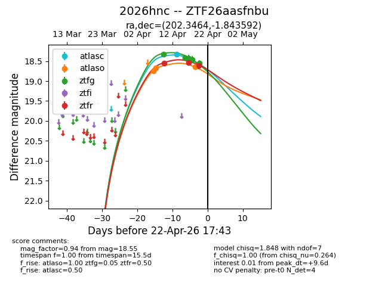
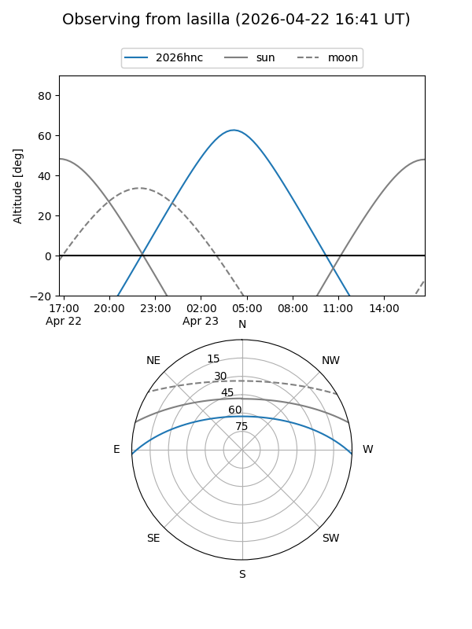
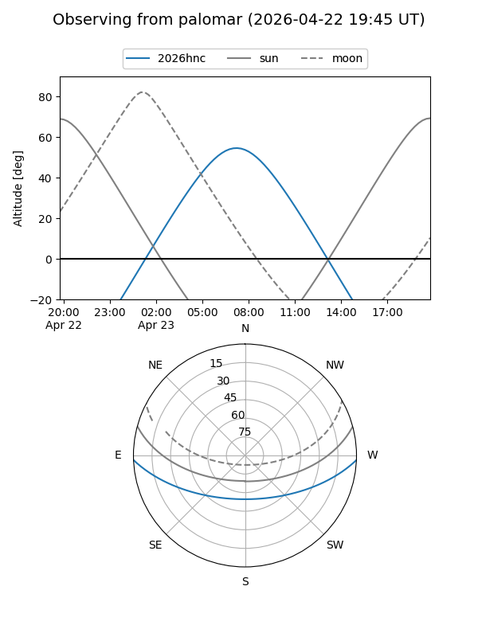
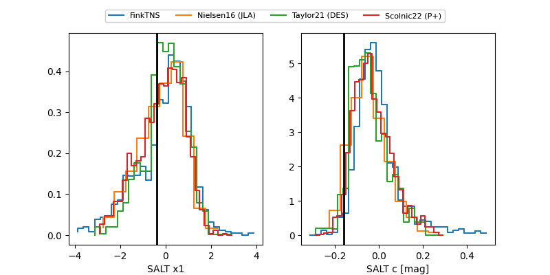

2026hnc
Target 2026hnc at 2026-04-22 17:45
Aliases and brokers:
FINK: link
Lasair: link
ALeRCE: link
TNS: link
YSE: link
alt names
ZTF26aasfnbu (ztf,fink_ztf)
2026hnc (tns,yse)
Coordinates:
equatorial (ra, dec) = 202.3464,-1.84359
equatorial (HMS+DMS) = 13:29:23.14,-01:50:36.93
galactic (l, b) = (321.9424,+59.62020)
Flags:
Photometry:
last atlasc=18.33, atlaso=18.64, ztfg=18.55, ztfr=18.61
1 atlasc, 3 atlaso, 5 ztfg, 3 ztfr detections
Lightcurve

Visibility


Additional plots
